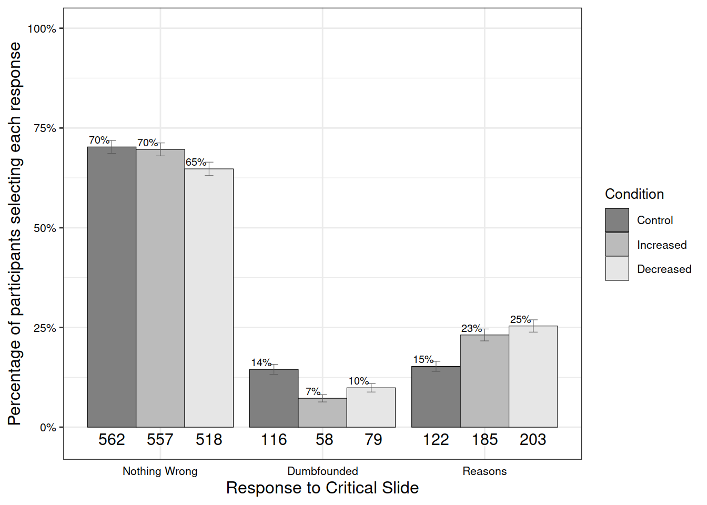
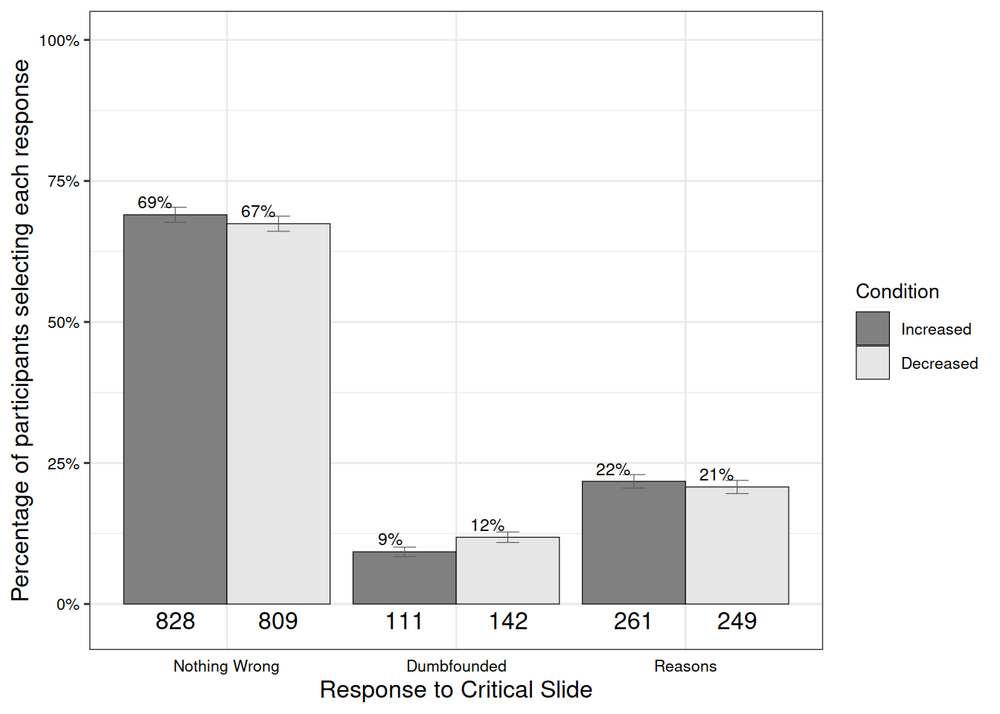

control future now
other 400 400 400
self 400 400 400Sample and Simulated Data
Keywords
moral dumbfounding, dual-processes, reasons, intuitions
Analysis of Simulated Data
The following is a sample analysis using a simulated data set. This simulated data set contains N = 2400 participants. This sample size was chosen in order for at least 200 participants at each level of the temporal distance IV when analysing the scenarios separately (i.e., aiming for n = 600 per scenario). This sample size will also allow for the detection of a medium effect in the combined analysis on the entire sample.
Temporal Distancing and Dumbfounding

Overview of Judgments
One thousand Seven hundred seventeen participants (71.54%) rated the behavior of Julie and Mark as wrong initially, and one thousand five hundred Ninety five participants (66.46%) rated the behavior as wrong at the end of the task. There was a significant difference between initial ratings (M = 3.2, SD = 1.3) and revised ratings (M = 3.4, SD = 1.4), t(2399) = -4.21, p < .001, d = 0.09.
Distancing and Judgments Made
There was no difference in initial judgement depending on distance manipulation: F(2, 2397) = 0.12, p = .884 \(\eta\)p2 = 0, (Mincreased = 3.2, SDincreased = 1.3, Mdecreased = 3.3, SDdecreased = 1.3, Mcontrol = 3.2, SDcontrol = 1.4). There was no difference in revised judgement depending on distance manipulation: F(2, 2397) = 1.52, p = .219, \(\eta\)p2 = 0.001, (Mincreased = 3.4, SDincreased = 1.3, Mdecreased = 3.4, SDdecreased = 1.4, Mcontrol = 3.5, SDcontrol = 1.4).
Distancing and Reason-Giving/Dumbfounding
There was a significant association between temporal distance condition and response to the critical slide, \(\chi\)2(4, N = 2400) = 43.86, p < .001, V = 0.14, the observed power was 1. The responses to the critical slide for the increased distance group (N = 800) the decreased distance group (N = 800), and the control group (N = 800) are displayed in {apafg-tempoverall}.
| Control | Increased | Decreased | ||
|---|---|---|---|---|
| Observed count | Reasons | 562 | 557 | 518 |
| Dumbfounded | 116 | 58 | 79 | |
| Nothing Wrong | 122 | 185 | 203 | |
| Expected count | Reasons | 545.67 | 545.67 | 545.67 |
| Dumbfounded | 84.33 | 84.33 | 84.33 | |
| Nothing Wrong | 170 | 170 | 170 | |
| Standardised residuals | Reasons | 1.52 | 1.05 | -2.57* |
| Dumbfounded | 4.47** | -3.71** | -0.75 | |
| Nothing Wrong | -5.08** | 1.59 | 3.49** |
Note. * = sig. at < .05; ** = sig. at < .001
Psychological Distancing and Dumbfounding

Overview of Judgments
One thousand Seven hundred seventeen participants (71.54%) rated the behavior of Julie and Mark as wrong initially, and one thousand five hundred Ninety five participants (66.46%) rated the behavior as wrong at the end of the task. There was a significant difference between initial ratings (M = 3.2, SD = 1.3) and revised ratings (M = 3.4, SD = 1.4), t(2399) = -4.21, p < .001, d = 0.09.
Distancing and Judgments Made
There was no difference in initial judgement depending on distance manipulation: t(2396.22) = 0.25, p = .799, d = 0.01, (Mincreased = 3.2, SDincreased = 1.3, Mdecreased = 3.2, SDdecreased = 1.3). There was no difference in revised judgement depending on distance manipulation: t(2397.99) = 0.39, p = .697, d = 0.02, (Mincreased = 3.4, SDincreased = 1.4, Mdecreased = 3.4, SDdecreased = 1.4).
Distancing and Reason-Giving/Dumbfounding
There was a significant association between temporal distance condition and response to the critical slide, \(\chi\)2(2, N = 2400) = 4.301, p = .116, V = 0.04, the observed power was 0.38. The responses to the critical slide for the increased distance group (N = 1200) and the decreased distance group (N = 1200) are displayed in {apafg-psychoverall}.
| Increased | Decreased | ||
|---|---|---|---|
| Observed count | Reasons | 828 | 809 |
| Dumbfounded | 111 | 142 | |
| Nothing Wrong | 261 | 249 | |
| Expected count | Reasons | 818.5 | 818.5 |
| Dumbfounded | 126.5 | 126.5 | |
| Nothing Wrong | 255 | 255 | |
| Standardised residuals | Reasons | 0.83 | -0.83 |
| Dumbfounded | -2.06* | 2.06* | |
| Nothing Wrong | 0.6 | -0.6 |
Note. * = sig. at < .05; ** = sig. at < .001
Distancing and Dumbfounding
| Response | Term | Estimate | S.E. | z | Wald | p | O.R | Lower | Upper |
|---|---|---|---|---|---|---|---|---|---|
| Dumbfounded | (Intercept) | -1.63 | 0.19 | -8.63 | -17.26 | < .001** | 0.19 | 0.13 | 0.28 |
| Dumbfounded | Psy-Self | 0.09 | 0.20 | 0.44 | 0.89 | 0.657 | 1.10 | 0.73 | 1.64 |
| Dumbfounded | Temp-Future | -1.07 | 0.27 | -3.90 | -7.81 | < .001** | 0.34 | 0.20 | 0.59 |
| Dumbfounded | Temp-Now | -0.35 | 0.23 | -1.52 | -3.04 | 0.129 | 0.70 | 0.45 | 1.11 |
| Dumbfounded | Scenario-Jennifer | -0.18 | 0.20 | -0.91 | -1.83 | 0.361 | 0.84 | 0.57 | 1.23 |
| Dumbfounded | Scenario-Julie and Mark | 0.31 | 0.18 | 1.72 | 3.44 | 0.085 | 1.37 | 0.96 | 1.96 |
| Dumbfounded | Scenario-Trolley | -0.12 | 0.20 | -0.59 | -1.18 | 0.556 | 0.89 | 0.60 | 1.32 |
| Dumbfounded | Psy-Self$times$Temp-Future | 0.62 | 0.35 | 1.75 | 3.51 | 0.079 | 1.86 | 0.93 | 3.73 |
| Dumbfounded | Psy-Self×Temp-Now | 0.09 | 0.32 | 0.28 | 0.56 | 0.778 | 1.09 | 0.59 | 2.04 |
| Nothing-Wrong | (Intercept) | -1.52 | 0.17 | -9.14 | -18.28 | < .001** | 0.22 | 0.16 | 0.30 |
| Nothing-Wrong | Psy-Self | -0.11 | 0.20 | -0.54 | -1.09 | 0.586 | 0.90 | 0.61 | 1.33 |
| Nothing-Wrong | Temp-Future | 0.29 | 0.18 | 1.59 | 3.18 | 0.111 | 1.34 | 0.93 | 1.92 |
| Nothing-Wrong | Temp-Now | 0.60 | 0.18 | 3.30 | 6.61 | < .001** | 1.81 | 1.27 | 2.58 |
| Nothing-Wrong | Scenario-Jennifer | -0.13 | 0.15 | -0.91 | -1.81 | 0.364 | 0.87 | 0.66 | 1.17 |
| Nothing-Wrong | Scenario-Julie and Mark | 0.15 | 0.14 | 1.03 | 2.07 | 0.302 | 1.16 | 0.88 | 1.54 |
| Nothing-Wrong | Scenario-Trolley | 0.18 | 0.15 | 1.20 | 2.41 | 0.229 | 1.19 | 0.90 | 1.59 |
| Nothing-Wrong | Psy-Self×Temp-Future | 0.24 | 0.26 | 0.92 | 1.83 | 0.359 | 1.27 | 0.76 | 2.13 |
| Nothing-Wrong | Psy-Self×Temp-Now | -0.02 | 0.26 | -0.07 | -0.14 | 0.945 | 0.98 | 0.59 | 1.64 |
Note. * = sig. at emph{p} < .05; ** = sig. at emph{p} < .001
where’s the table
Overall the model significantly predicted responses to the critical slide \(\chi\)2(16, N = 2400) = 66.79, p < .001, The observed power was 1. The model explained between 0.92% (Cox and Snell R square) and 2.18% (Nadelkerke R squared) of the variance in responses to the critical slide. For scenarios in the future, participants were more likely to provide reasons than to present as dumbfounded Wald = -7.81, p < .001, odds ratio = 0.34, 95% CI [0.2, 0.59].